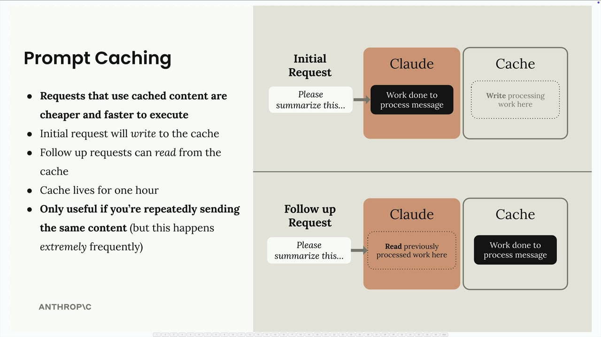

실전 프롬프트 캐싱
프롬프트 캐싱은 동일한 콘텐츠를 Claude에 반복적으로 전송할 때 API 요청을 더 빠르고 저렴하게 만들어 주는 강력한 최적화 기능입니다. 애플리케이션에서 이를 효과적으로 구현하는 방법을 살펴보겠습니다.

프롬프트 캐싱의 작동 원리
프롬프트 캐싱을 활성화하면 첫 번째 요청이 1시간 동안 유지되는 캐시에 콘텐츠를 씁니다. 이후 요청은 동일한 콘텐츠를 다시 처리하는 대신 이 캐시에서 읽어올 수 있습니다. 이 기능은 특히 다음을 전송할 때 유용합니다:
- 대형 시스템 프롬프트 (예: 6K 토큰 규모의 코딩 어시스턴트 프롬프트)
- 복잡한 도구 스키마 (여러 도구에 대해 약 1.7K 토큰)
- 반복되는 메시지 콘텐츠
핵심은 캐싱이 동일한 콘텐츠를 반복적으로 전송할 때만 도움이 된다는 점입니다. 하지만 많은 애플리케이션에서 이런 상황은 매우 빈번하게 발생합니다.
도구 스키마 캐싱 설정
도구 스키마를 캐시하려면 목록의 마지막 도구에 cache control 필드를 추가해야 합니다. 원본 도구 정의를 수정하지 않고 올바르게 처리하는 방법은 다음과 같습니다:
if tools:
tools_clone = tools.copy()
last_tool = tools_clone[-1].copy()
last_tool["cache_control"] = {"type": "ephemeral"}
tools_clone[-1] = last_tool
params["tools"] = tools_clone
이 방법은 cache control 필드를 추가하기 전에 도구 목록과 마지막 도구 스키마 모두의 복사본을 만듭니다. tools[-1]["cache_control"] 을 직접 수정할 수도 있지만, 복사 방식은 나중에 도구 순서를 변경할 때 발생할 수 있는 문제를 방지합니다.
시스템 프롬프트 캐싱
시스템 프롬프트의 경우 cache control이 포함된 텍스트 블록으로 구조화해야 합니다:
if system:
params["system"] = [
{
"type": "text",
"text": system,
"cache_control": {"type": "ephemeral"}
}
]이렇게 하면 시스템 프롬프트가 단순 문자열에서 캐싱을 지원하는 구조화된 형식으로 변환됩니다.
캐시 동작 이해하기
캐싱이 활성화된 상태로 요청을 실행하면 응답에서 다양한 사용 패턴을 확인할 수 있습니다:
-
첫 번째 요청:
cache_creation_input_tokens=1772- Claude가 캐시에 씁니다 -
이후 요청:
cache_read_input_tokens=1772- Claude가 캐시에서 읽습니다 - 콘텐츠 변경 시: 새로운 캐시 생성 토큰이 나타납니다
캐시는 매우 민감합니다. 도구나 시스템 프롬프트에서 단 하나의 문자를 변경해도 해당 구성 요소의 전체 캐시가 무효화됩니다.
캐시 순서와 중단점
단일 요청에서 여러 캐시 중단점을 설정할 수 있습니다. 순서가 중요합니다:
- 도구 (제공된 경우)
- 시스템 프롬프트 (제공된 경우)
- 메시지
시스템 프롬프트를 변경하되 도구는 동일하게 유지하면, 부분 캐시 읽기(도구)와 캐시 쓰기(새 시스템 프롬프트)가 함께 나타납니다. 이러한 세밀한 캐싱 덕분에 실제로 변경된 부분만 처리 비용을 지불합니다.
실용적인 고려 사항
프롬프트 캐싱은 다음과 같은 경우에 가장 효과적입니다:
- 요청 간 일관된 도구 스키마
- 안정적인 시스템 프롬프트
- 유사한 컨텍스트로 여러 요청을 보내는 애플리케이션
캐시는 1시간 동안만 유지되므로, 장기 저장이 아닌 비교적 빈번한 API 사용이 있는 애플리케이션을 위해 설계되었음을 기억하세요.